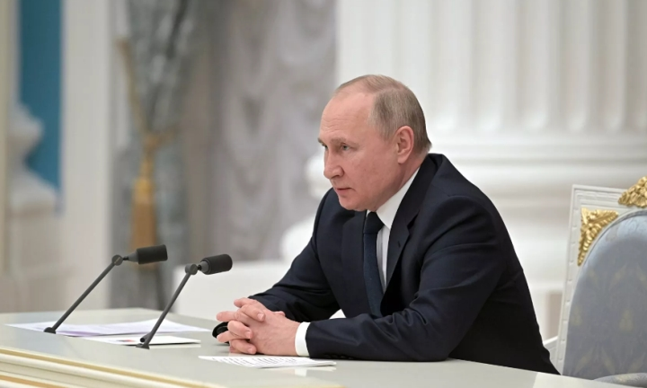

Báo mới
Đài RT ngày 25-2 đưa tin nhóm tin tặc sừng sỏ Anonymous tuyên bố phát động một cuộc chiến tranh mạng chống lại Nga sau khi quốc gia này tấn công Ukraine.
Sự vắng mặt của Quang Thịnh (3) sẽ là tổn thất rất lớn cho hàng phòng ngự U23 Việt Nam
Chủ tịch nước Nguyễn Xuân Phúc ghi vào Sổ vàng lưu niệm tại Phủ Tổng thống Singapore. (Nguồn: TTXVN)
Bộ Lao động - Thương binh và Xã hội thông tin về những chính sách về bảo hiểm, lao động - tiền lương bắt đầu có hiệu lực từ tháng 3/2022.
PGS.TS Trần Minh Điển, Giám đốc Bệnh viện Nhi Trung ương hướng dẫn xác định mức độ mắc COVID-19 ở trẻ và cách chăm sóc trẻ F0 tại nhà. Nguồn: Bệnh viện Nhi Trung ương
TPO - Cùng với đà hồi phục của chứng khoán toàn cầu, VN-Index nhiều thời điểm tái lập mốc 1.500 điểm trong phiên cuối tuần. Dù vậy, về cuối phiên, áp lực bán gia tăng, chỉ số đóng cửa lùi về 1.498 điểm.
Assingment2 là môn xây dựng website
Điện thoại:0396909837
Email:datlqps22349@fpt.edu.vn
“Để đáp lại yêu cầu của Tổng thống Ukraine Volodymyr Zelensky, chúng tôi sẵn sàng cử đại diện của Bộ Ngoại giao Nga và chính quyền đến đàm phán”, ông Peskov cho hay. Trong video đăng tải cách đây ít giờ, Tổng thống Ukraine Volodymyr Zelensky kêu gọi người đồng cấp Nga ngồi xuống bàn đàm phán. Không lâu sau đó, Ngoại trưởng Nga Sergei Lavrov khẳng định sẽ sẵn sàng đàm phán ngay khi quân đội Ukraine hạ vũ khí.
Tại cuộc điện đàm mới đây với Chủ tịch Trung Quốc Tập Cận Bình, Tổng thống Putin cũng cho biết Nga sẵn sàng tiến hành các cuộc đàm phán cấp cao với Ukraine. "Mỹ và NATO lâu nay phớt lờ những lo ngại an ninh hợp lý của Nga, liên tục không giữ các cam kết và tiếp tục đẩy mạnh triển khai quân sự về phía đông, thách thức giới hạn cuối cùng trong lợi ích chiến lược của Nga", ông Putin nói trong cuộc điện đàm. Về phần mình, Tổng thống Belarus Alexander Lukashenko khẳng định Minsk sẽ cung cấp mọi điều kiện cần thiết cho các cuộc đàm phán giữa Moskva và Kiev. Theo ông Lukashenko, để các cuộc đàm phán diễn ra thành công, Kiev phải từ chối gia nhập NATO và ngừng các hành động thù địch ở hai nước cộng hòa tự xưng Donetsk và Lugansk.